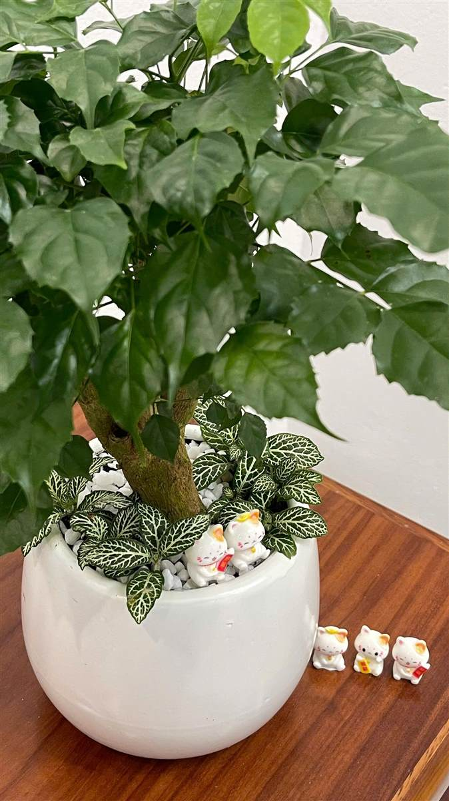
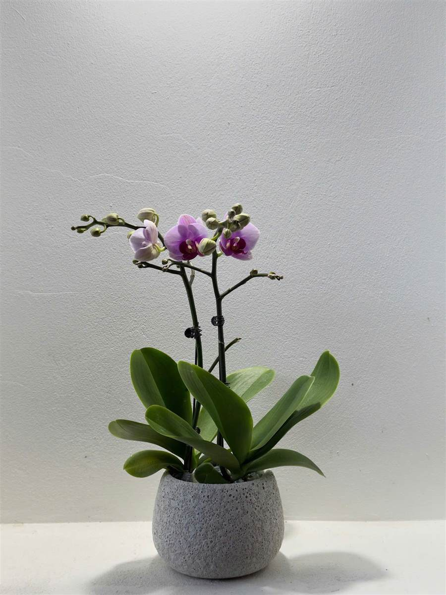
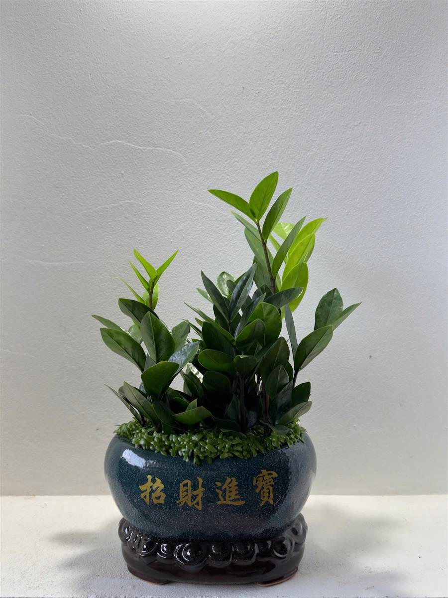
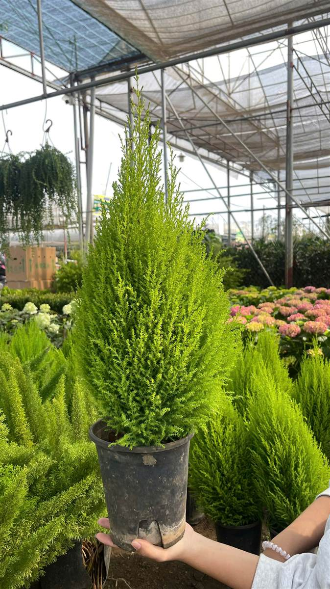
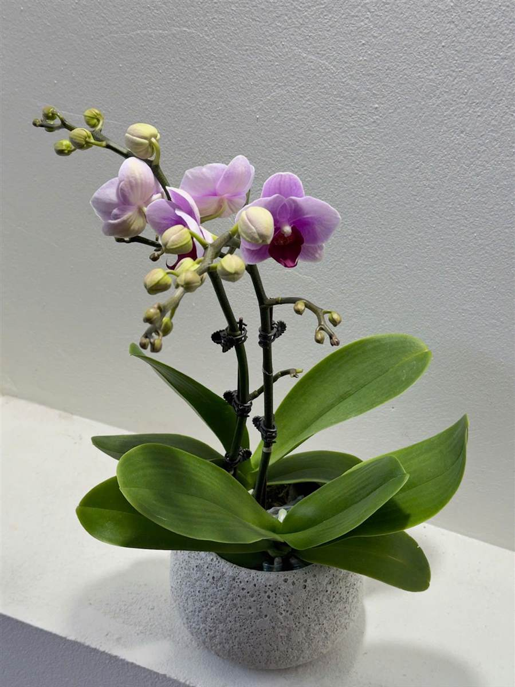
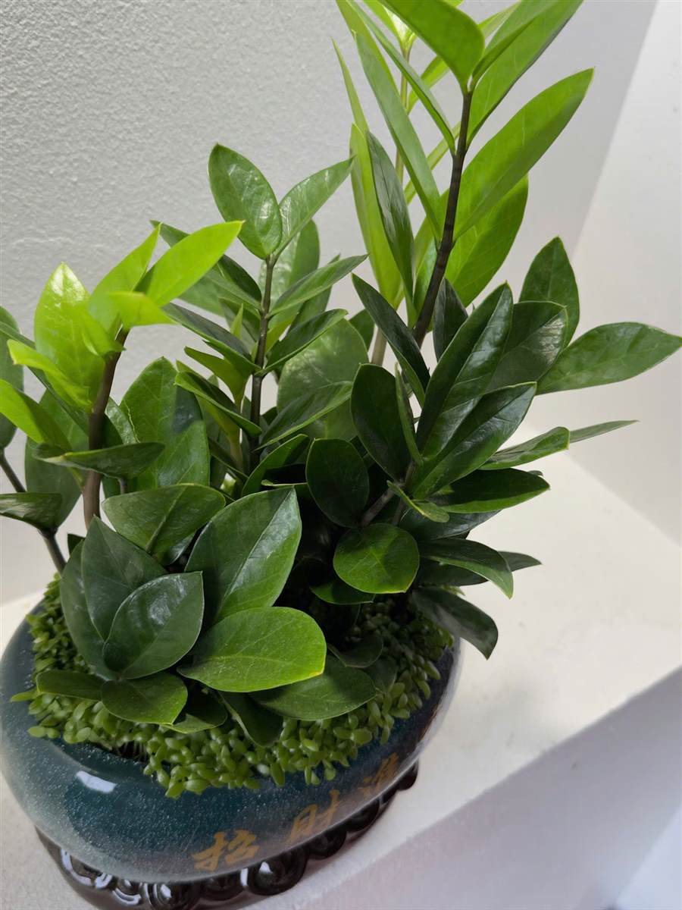
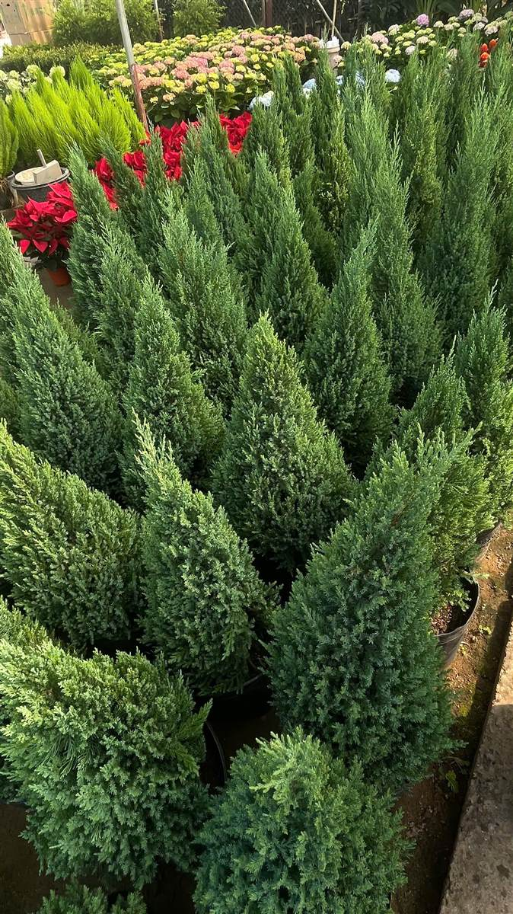
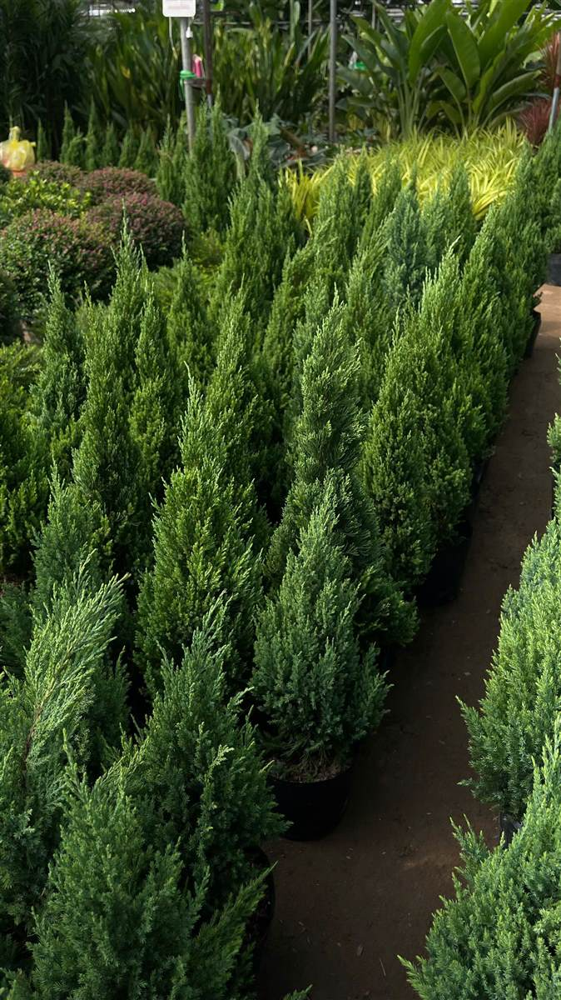

SOWN
Cây hạnh phúc
Cây hạnh phúc
Biểu tượng của niềm vui và sự sum vầy — đúng tinh thần Growing Little Happiness. Hợp đặt bàn làm việc, phòng khách, làm quà tân gia.
- ☀ Ánh sáng tán xạ
- 💧 2–3 lần/tuần
- 🎁 Quà tân gia, khai trương
Từ những chậu lan hồ điệp, cây hạnh phúc nhỏ xinh đến các dáng bonsai đầy nghệ thuật, SOWN chọn lọc những sắc xanh giúp không gian sống thêm hài hòa và mang thiên nhiên đến gần hơn với mỗi ngày.



Mỗi loại cây mang một dáng vẻ riêng, góp phần tạo nên nét cân bằng và dấu ấn tự nhiên cho nơi bạn sống.
Những điểm xanh tinh gọn cho bàn làm việc, góc học tập và không gian cá nhân.
Xem gợi ý →
02Điểm nhấn tự nhiên giúp căn phòng thêm sức sống và hài hòa.
Xem gợi ý → 03
03Vẻ đẹp của dáng thế, sự cân đối và nét tinh tế trong từng chi tiết.
Xem gợi ý →Một lựa chọn xanh ý nghĩa để gửi trao lời chúc và sự quan tâm chân thành.
Xem gợi ý →Kéo để xoay vòng trưng bày, chạm vào một chậu cây để đưa nó ra phía trước.




Di chuột hoặc chạm vào thẻ để lật xem cách chăm 🌿
Biểu tượng của niềm vui và sự sum vầy — đúng tinh thần Growing Little Happiness. Hợp đặt bàn làm việc, phòng khách, làm quà tân gia.
Những cánh hoa tím nhạt mềm mại, sang trọng mà vẫn dịu dàng. Món quà tinh tế cho người thương, thầy cô, đối tác.
Phiên bản nhỏ xinh cho góc bàn làm việc, kệ sách hay bậu cửa sổ. Gọn gàng, thanh lịch.
Chậu sứ men xanh khắc chữ “Chiêu tài tiến bảo”, phủ rêu xanh — lời chúc may mắn, tài lộc cho dịp khai trương.
Tán lá xanh bóng, dáng khỏe khoắn, rất hợp phòng khách, quầy lễ tân hay văn phòng.
Dáng tháp xanh vàng chanh, lá thơm nhẹ khi chạm vào. Điểm nhấn tươi tắn cho ban công, hiên nhà và mùa Giáng sinh.

Nhỏ gọn, cứng cáp và gần như “không cần nhớ tưới”. Hoàn hảo cho người mới bắt đầu.

Chút nắng, chút gió là đủ vui. Một người bạn nhỏ kiên cường cho bậu cửa sổ.
Dáng lá thẳng hiện đại, nổi tiếng với khả năng thích nghi và làm không gian trong lành.

Những dây lá hình tim rủ mềm mại — chỉ cần một móc treo là góc nhà như có rèm xanh.
Rễ củ độc đáo, tán lá gọn — một tác phẩm nhỏ mang vẻ đẹp của thời gian.

Tán cây được tỉa tròn cân đối, mang lại cảm giác ngăn nắp và trang nhã cho lối vào.
Danh mục được cập nhật theo từng đợt tuyển chọn. Nhắn SOWN để được tư vấn sản phẩm hiện có nhé 🌿


Trong tiếng Anh, sown là dạng quá khứ phân từ của động từ sow – gieo hạt, gieo trồng. SOWN chọn hình ảnh ấy làm cảm hứng cho câu chuyện thương hiệu: những điều tốt đẹp thường bắt đầu từ một hạt mầm nhỏ, được nâng niu và chăm sóc qua từng ngày.
Với SOWN, một chậu cây không chỉ làm đẹp không gian. Đó còn là lời nhắc dịu dàng về sự sống, sự kiên nhẫn và niềm vui được nuôi dưỡng từ những điều bình dị.
SOWN mong muốn đồng hành cùng bạn trên hành trình tạo nên những góc sống xanh, cân bằng và mang dấu ấn riêng.
Cuộn để đi cùng một hạt mầm — từ lúc được gieo xuống cho đến khi trở thành niềm vui nhỏ trong nhà bạn.
→
Một hạt mầm, một nắm đất tơi và rất nhiều hy vọng.

Những chiếc lá đầu tiên vươn lên đón ánh sáng.

Được chăm sóc mỗi ngày trong vườn ươm, cây dần vững vàng.
Và rồi, một niềm vui nhỏ nở hoa trong không gian của bạn.
Mỗi chiếc lá mới là một lời nhắc nhỏ: niềm vui cũng cần được vun trồng, từng chút một, mỗi ngày.
SOWN hướng đến trải nghiệm lựa chọn cây xanh chỉn chu, gần gũi và phù hợp với nhu cầu thực tế.
Ưu tiên vẻ đẹp tự nhiên, hình dáng cân đối và sự phù hợp với từng không gian trưng bày.
Lật thẻ ↻Từng chậu được kiểm tra dáng, lá và bộ rễ trước khi đến tay bạn.
Gợi ý lựa chọn dựa trên diện tích, điều kiện ánh sáng và nhu cầu chăm sóc của khách hàng.
Lật thẻ ↻Kể cho SOWN về căn phòng của bạn — chúng mình sẽ gợi ý mầm xanh phù hợp nhất.
Chia sẻ hướng dẫn cơ bản để bạn hiểu cây hơn và chăm sóc mầm xanh đúng cách.
Lật thẻ ↻Cây có dấu hiệu lạ? Nhắn SOWN bất cứ lúc nào để được hỗ trợ.
Một vài cảm hứng để bạn hình dung mầm xanh sẽ thay đổi không gian sống như thế nào. Chạm vào ảnh để xem lớn hơn.


Bốn điều nhỏ giúp mầm xanh của bạn luôn khỏe mạnh.
Phần lớn cây trong nhà thích ánh sáng tán xạ gần cửa sổ. Tránh nắng gắt buổi trưa chiếu trực tiếp lên lá, và xoay chậu mỗi tuần để cây phát triển đều.
Tưới khi lớp đất mặt đã khô 2–3cm, tưới đẫm rồi để nước thoát hết. Sen đá, kim tiền cần ít nước; trầu bà, tùng thơm thích đất ẩm nhẹ.

Chọn chậu có lỗ thoát nước và giá thể tơi xốp. Khi rễ bắt đầu mọc ra khỏi lỗ chậu, đó là lúc mầm xanh muốn một “ngôi nhà” lớn hơn.
Lau lá định kỳ, cắt bỏ lá úa và quan sát cây mỗi ngày. Cây xanh lớn lên từ sự kiên nhẫn — và niềm vui cũng vậy.
Hãy chia sẻ với SOWN về không gian bạn muốn tô điểm hoặc loại cây bạn đang tìm kiếm. Chúng mình sẵn lòng tư vấn lựa chọn phù hợp.